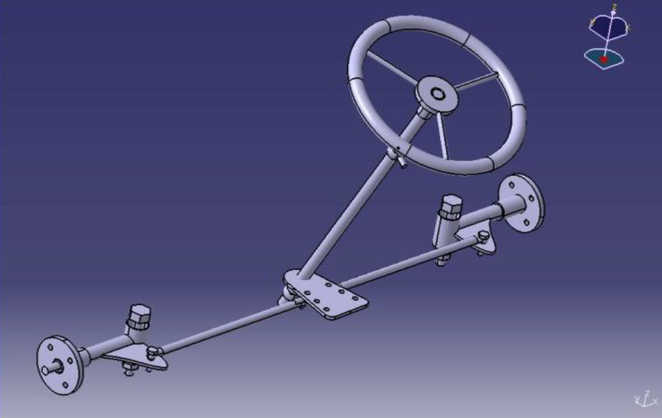
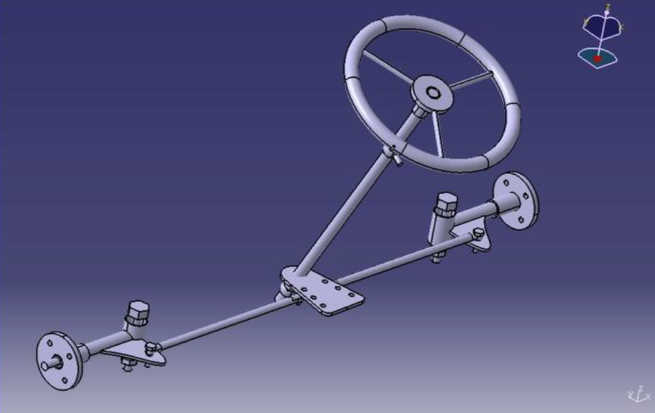

Rakesh Kumar Ganji
Go-Kart Championship (NKRC)
Design, Analysis, and Manufacturing of a Competition Go-Kart
Project Summary:
Objective: To lead the design, engineering analysis, and fabrication of a fully functional go-kart to compete in the National Kart Racing Championship (Season-4). The goal was to create a safe, high-performance, and manufacturable vehicle by applying systems engineering principles and advanced simulation to optimize every subsystem.
Core Challenge: Balance the competing demands of safety (FIA/ENCAP impact standards), performance (handling, acceleration), weight reduction, and cost-effectiveness within a strict competition rulebook, while managing a multidisciplinary student team through the complete product development cycle.
Outcome: Successfully delivered a race-ready kart with a torsionally rigid chassis (FOS > 2.5 in impact), optimized Ackermann steering (3.2m turning radius), and a lightweight design (22kg frame, 180kg total mass). The team placed competitively, validating the design through real-world racing performance.

Final 3D CAD assembly of the competition go-kart, showcasing integrated subsystems (chassis, steering, drivetrain, body).
Detailed Methodology & Execution:
1. Systems Engineering & Team Management:As Team Vice-Captain, I structured the project into specialized sub-teams, each responsible for a key subsystem, ensuring parallel development and system integration:
• Frame & Chassis Design
• Body & Composites
• Steering System
• Brakes & Wheels
• Drivetrain & Powertrain
• Electrical Systems
A systems-level budget was allocated and tracked, making trade-off decisions (e.g., investing in FEA software vs. material cost) to maximize overall performance. 2. Chassis Design & Structural Safety Analysis (FEA):
The chassis is the vehicle's safety cell. Its design was driven by rigorous FEA validation against crash standards.
• Material Selection:SAE 1018 Steel Tubing (1" OD, 2mm wall). Chosen for its excellent strength-to-weight ratio (Tensile Yield: 380 MPa), weldability, and manufacturability.
• Finite Element Analysis (ANSYS):The frame was analyzed under multiple dynamic impact scenarios as per ENCAP standards:
• Frontal Impact (64 kmph): Simulated a 3520 N force. Max Stress: 174 MPa, FOS: 2.58.
• Side Impact (48 kmph): Simulated a 2640 N force. Max Stress: 179 MPa, FOS: 2.51.
• Rear Impact (50 kmph): Simulated a 2750 N force. Max Stress: 153 MPa, FOS: 2.93.
• Torsional Rigidity Analysis: Applied a 1766 N cornering load. Achieved a low deformation with a stress of 84 MPa, confirming a stiff, responsive platform for handling.
• Design for Manufacturing (DFM): Maximized continuous bent tubing to reduce weld count, lower cost, and increase strength. Specified MIG welding for robust, controlled joints.


Finite Element Analysis (FEA) results in ANSYS showing stress distribution and deformation under frontal impact load case (3520 N).
3. Steering & Suspension Geometry Design:
Designed a Pivot Pin/Pitman Arm system for simplicity, low weight, and minimal play.
• Ackermann Geometry: Achieved ~100% Ackermann through precise tie-rod placement on a multi-hole pivot plate. This ensures correct inner/outer wheel angles during turns, minimizing tire scrub and improving cornering.
• Kinematic Calculations: Using vehicle dimensions (Wheelbase: 52", Track Width: 42"), calculated optimal steering angles for a target turning radius of 3.2 meters.
• Inner Wheel Angle (δᵢ): 30°
• Outer Wheel Angle (δₒ): 22°
• Component Analysis: Performed FEA on the AISI 4140 front axle under a 490 N tie-rod load, confirming a Factor of Safety of 1.8.
 

Steering system CAD model and kinematic diagram illustrating optimized Ackermann geometry for a 3.2m turning radius. 4. Braking System Design & Thermal Analysis:
Engineered a rear-disc braking system for effective stopping power while managing thermal loads.
• Performance Calculations:
• Stopping Distance: 23.6 m (from 60 kmph, μ=0.6)
• Braking Force: 635 N
• Brake Torque: 52.8 Nm
• Line Pressure: 4 MPa (with a 4:1 pedal ratio and 100N driver input)
• Thermal FEA (ANSYS): Analyzed the brake disc under repeated hard stops. Predicted a maximum temperature of 200°C and a peak heat flux of 4.38 x 10⁶ W/m², confirming the design would avoid brake fade due to overheating.
• Component Validation: FEA on the brake mount showed negligible deformation (0.002 mm) under load.


• Engine: Selected a 110cc, 8 BHP CVT (Continuously Variable Transmission) engine for seamless power delivery and simplicity.
• Final Drive: Designed a chain drive with a 3:1 reduction ratio (driver:driven sprocket) to provide optimal torque multiplication for acceleration.
• Integration: Custom-machined an adapter to mount the output sprocket to the engine's horizontal shaft. The engine was mounted on anti-vibration bushings above the rear axle. 6. Electrical & Auxillary Systems:
• Electrical System: Designed a dual-bus system featuring a safety kill switch (grounding the ignition coil) and a self-start circuit with a 12V battery and relay.
• Emissions Control: Incorporated a charcoal canister evaporative emission control system to capture fuel vapors, increasing fuel economy and reducing emissions—a unique feature for a competition kart.
• Ergonomics & Safety: Designed a 5-point racing harness mounted to primary frame members, a fire extinguisher mount, and energy-absorbing foam padding on roll cage bars adjacent to the driver. 7. Prototyping, Fabrication & Testing:
• CAD to Reality: Final designs from CATIA & Pro/ENGINEER were used to create fabrication drawings.
• Fabrication: Led the workshop fabrication, including tube bending, MIG welding of the SAE 1018 frame, assembly of the steering and drivetrain, and mounting of FRP (Fiber Reinforced Plastic) body panels.
• Track Testing: Conducted shakedown tests to validate handling, braking performance, and system reliability before the national competition. Results & Engineering Achievements:
1. Validated Safety: Chassis exceeded impact safety requirements with a minimum Factor of Safety of 2.5 across all crash scenarios.
2. Performance Metrics Achieved:
• Turning Radius: 3.2 m (meeting sub-4m target)
• Weight: Frame: 22 kg, Total Vehicle (with driver): ~180 kg
• Top Speed: 60 km/h
3. Innovative Features: Successfully implemented a multi-sensitive steering adjustment system and a charcoal canister emission system, setting the design apart from competitors.
4. Systems Integration: Successfully integrated all mechanical, structural, and electrical subsystems into a reliable, race-ready vehicle.
This project was a comprehensive exercise in practical mechanical engineering. It required not only technical skills in design and analysis but also leadership, teamwork, and project execution to transform a concept into a functioning, competitive vehicle. The success—validated by both simulation (FOS > 2.5) and real-world competition—showcases an ability to deliver complex engineering projects.